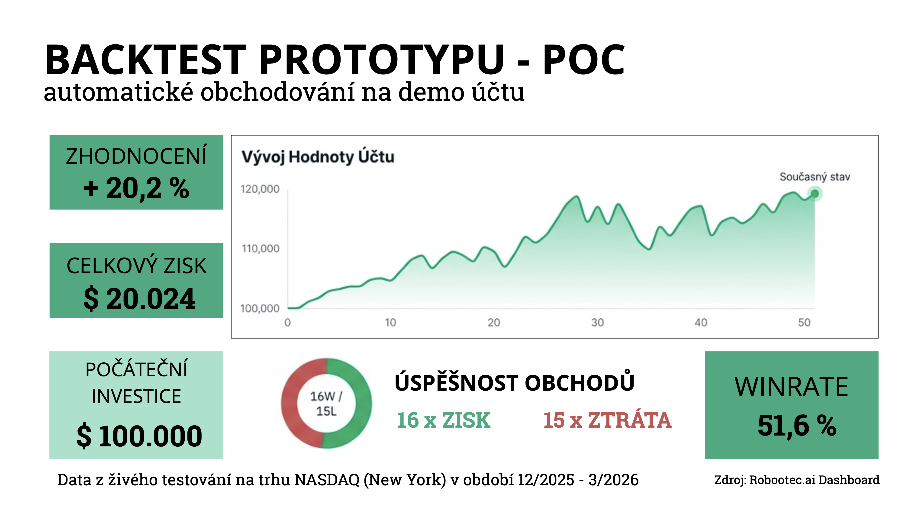

Zde vidíte první výsledky prototypu systému ROBOOTEC.
Systém byl testován na trhu NASDAQ na demo účtu s kapitálem 100 tisíc dolarů.
Během testovacího období dosáhl zhodnocení přes 20 procent.
Winrate byla přibližně 51 procent, což je u tradingu běžná hodnota.
Díky správnému řízení risku však systém generoval dlouhodobě pozitivní výsledek.
Tyto výsledky slouží jako první ověření funkčnosti konceptu.